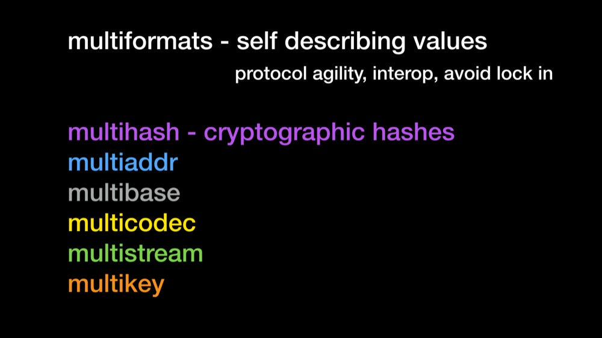
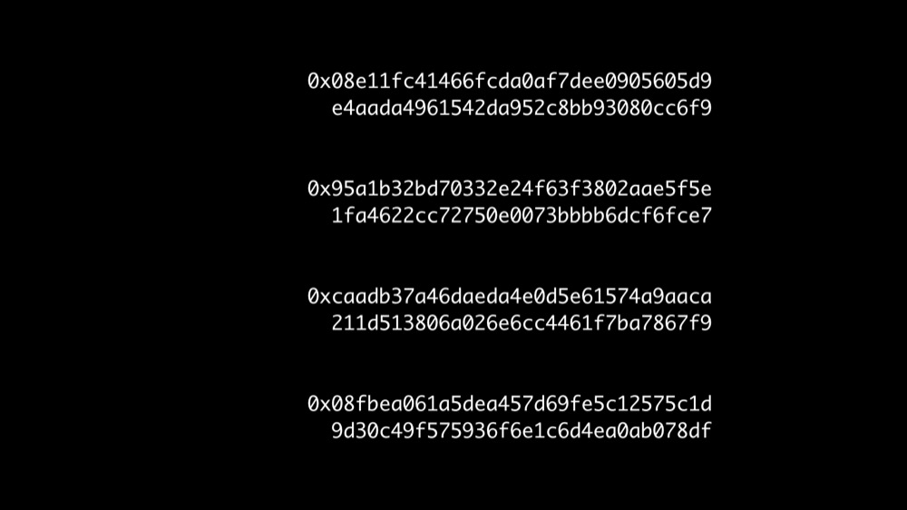
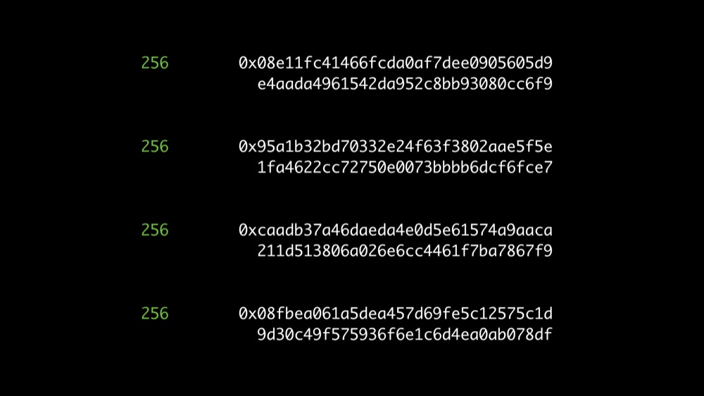
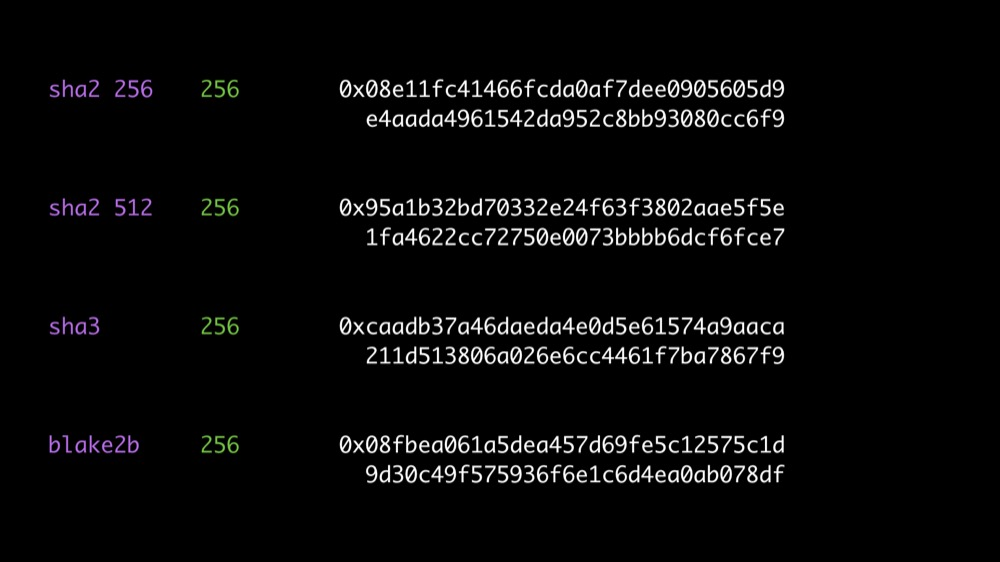
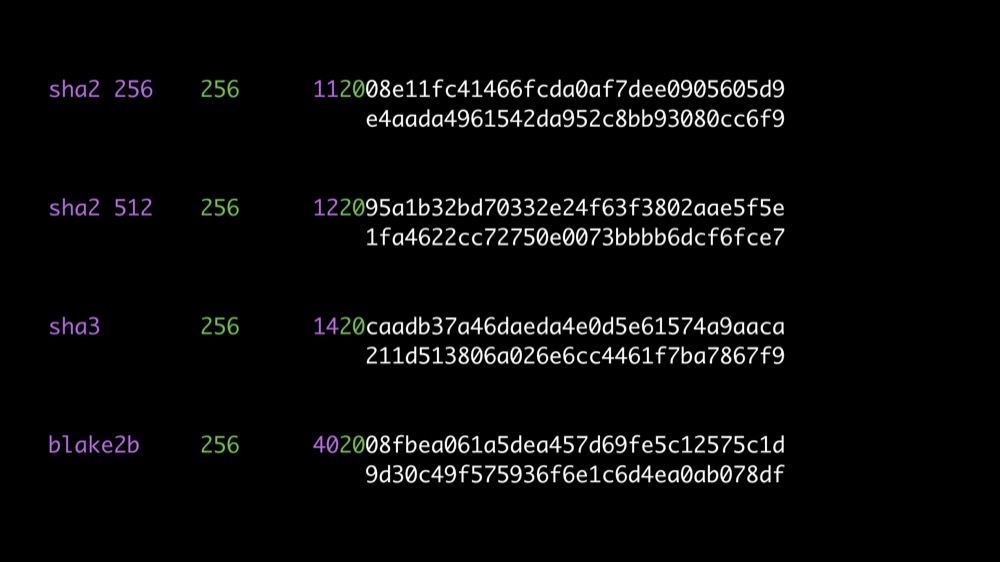
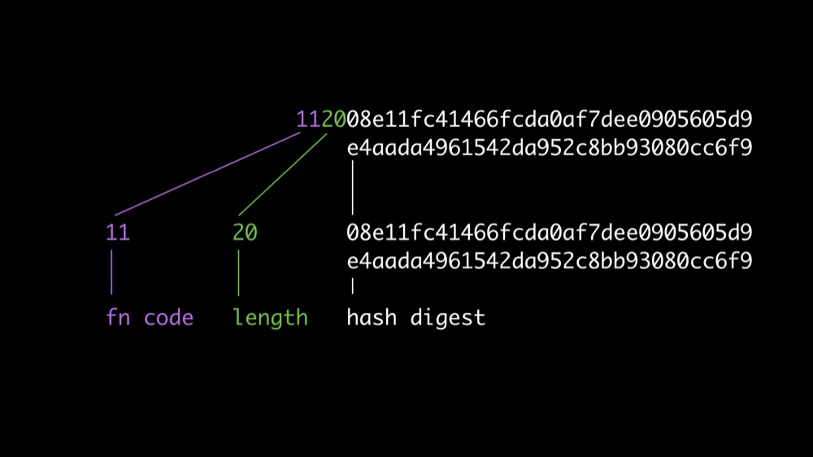
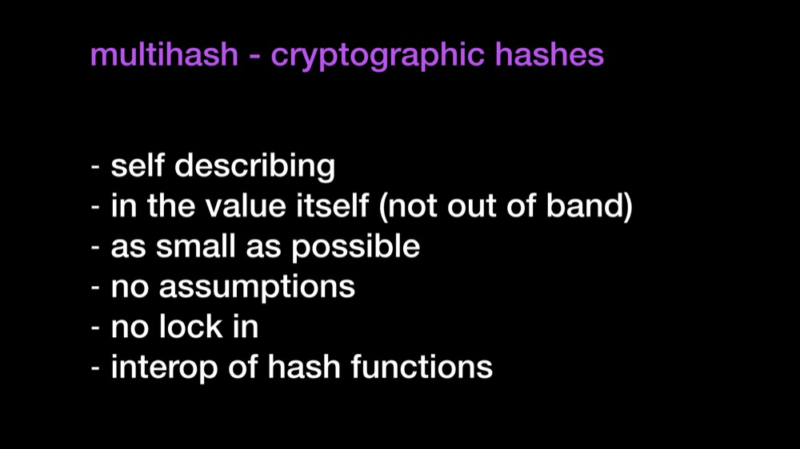
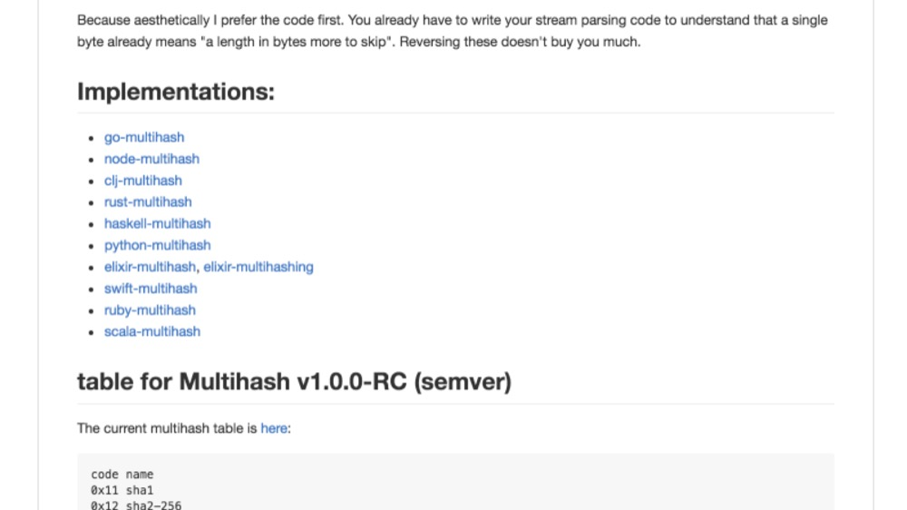

Self identifying hashes
Multihash is a protocol for differentiating outputs from various well-established cryptographic hash functions, addressing size + encoding considerations.
It is useful to write applications that future-proof their use of hashes, and allow multiple hash functions to coexist. See jbenet/random-ideas#1 for a longer discussion.
Outputs of <encoding>.encode(multihash(<digest>, <function>)):
# sha1 - 0x11 - sha1("multihash")
111488c2f11fb2ce392acb5b2986e640211c4690073e # sha1 in hex
CEKIRQXRD6ZM4OJKZNNSTBXGIAQRYRUQA47A==== # sha1 in base32
5dsgvJGnvAfiR3K6HCBc4hcokSfmjj # sha1 in base58
ERSIwvEfss45KstbKYbmQCEcRpAHPg== # sha1 in base64
# sha2-256 0x12 - sha2-256("multihash")
12209cbc07c3f991725836a3aa2a581ca2029198aa420b9d99bc0e131d9f3e2cbe47 # sha2-256 in hex
CIQJZPAHYP4ZC4SYG2R2UKSYDSRAFEMYVJBAXHMZXQHBGHM7HYWL4RY= # sha256 in base32
QmYtUc4iTCbbfVSDNKvtQqrfyezPPnFvE33wFmutw9PBBk # sha256 in base58
EiCcvAfD+ZFyWDajqipYHKICkZiqQgudmbwOEx2fPiy+Rw== # sha256 in base64
<varint hash function code><varint digest size in bytes><hash function output>
Binary example (only 4 bytes for simplicity):
fn code dig size hash digest
-------- -------- ------------------------------------
00010001 00000100 101101100 11111000 01011100 10110101
sha1 4 bytes 4 byte sha1 digest
Why have digest size as a separate number?
Because otherwise you end up with a function code really meaning “function-and-digest-size-code”. Makes using custom digest sizes annoying, and is less flexible.
Why isn’t the size first?
Because aesthetically I prefer the code first. You already have to write your stream parsing code to understand that a single byte already means “a length in bytes more to skip”. Reversing these doesn’t buy you much.
Why varints?
So that we have no limitation on functions or lengths. Implementation note: you do not need to implement varints until the standard multihash table has more than 127 functions.
What kind of varints?
An Most Significant Bit unsigned varint, as defined by the multiformats/unsigned-varint.
Don’t we have to agree on a table of functions?
Yes, but we already have to agree on functions, so this is not hard. The table even leaves some room for custom function codes.
These are visual aids that help tell the story of why Multihash matters.







